UI Design
Before we started development of the project, we produced some sketches of how our UI may appear, and then evaluated these to eliminate any weaknesses before creating more advanced wireframe prototypes.
Please note: in the early stages of our development, our client requested a project with the aim of creating a tool to solve the allocation of Teaching Assistants to Modules, before changing to Students to Supervisors. This should explain why the sketches appear to be oriented to this goal rather than our current project, however the underlying principles behind both projects are extremenly similar, and so we believe there was still adequate insight gained from evaluating these sketches.
Teaching Assistant (Equivalent to Student)
The goals for these sketches were to allow prospective teaching assistants (with our new project the equivalent would be Students) to:- Be able to input the information required by UCL
- View details of a class they have been allocated to
- View possible classes with available spaces which they may apply for
We also included checklists and notifications to help a user track the progress of their application and avoid missing a deadline. The form to fill out information also includes a few different input types to best suit each data point, such as a text box to list skills. This is comparable to the current project, as users will fill out forms in an almost indentical way in both projects and so similar principles can be used.


This sketch is a great start; it clearly displays all the relevant data to the student in a centralised place, and maintains a high degree of freedom for them as they may move freely around the app. The features of this sketch are intuitive and memorable, so do well to keep the process as simple as possible for the user.
Module Lead (Equivalent to Supervisor)
As a Module Lead, the needs of this project would be:- Input information about the module they lead
- Monitor requests to teach a module from prospective Teaching Assisstants
While these sketches are a good start, there are certainly places of improvement. For one, this design hides the progress of filling out the information form from the user, which may lead to them becoming more impatient as a result. Furthermore, the user is not able to move freely around different stages of filling out the information form due to the sequential nature of this sketch structure, and so may be hindered if they wanted to check or amend a previous answer.
Teaching Assistant (Equivalent to Student)
Below are the prototypes we created for a Teaching Assistant according to our previously stated UI goals: 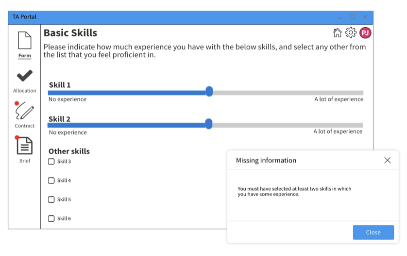
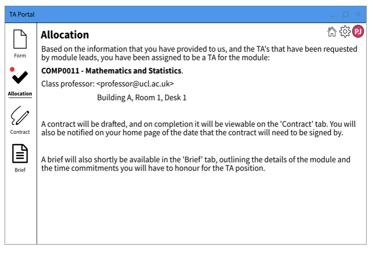
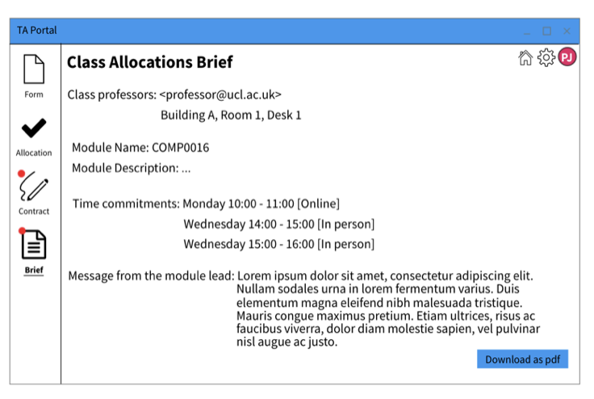
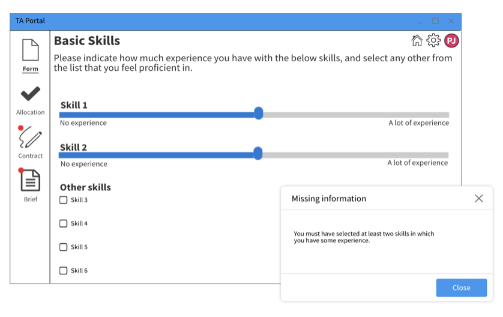
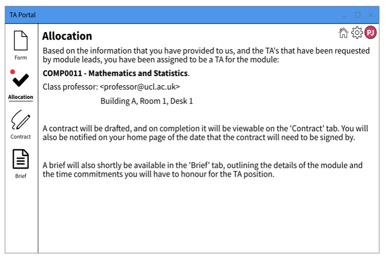
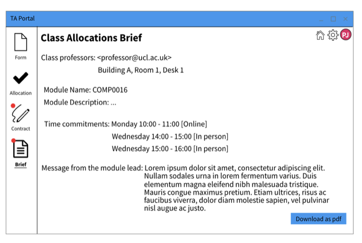
Module Lead (Equivalent to Supervisor)
Below are the prototypes we created for a Module Lead according to our previously stated goals, and taking into account feeback given on the sketches following discussions with our client. 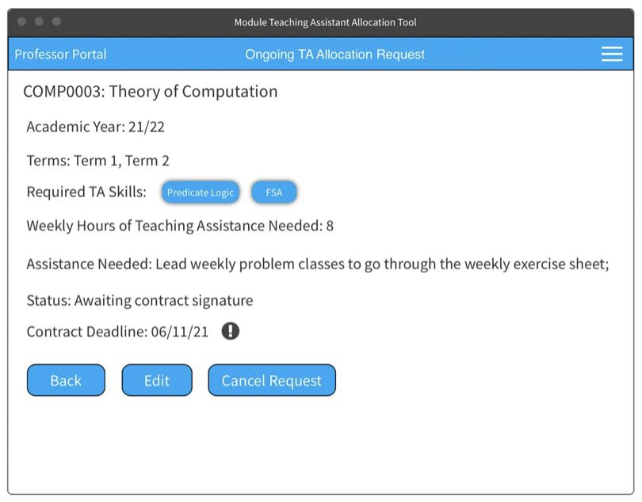
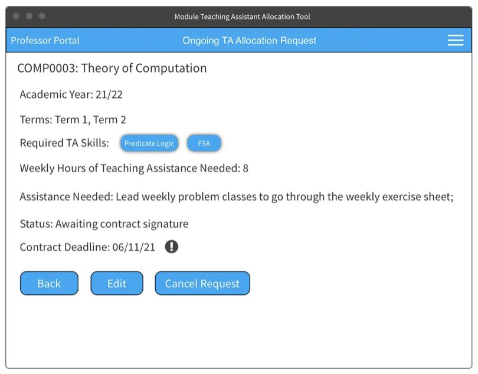
 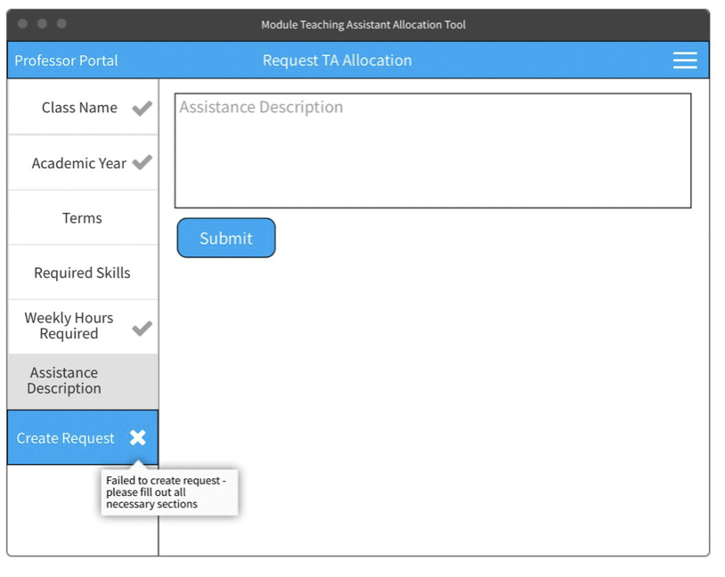
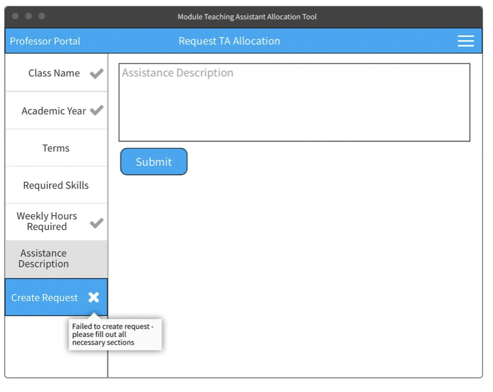
Evaluation
Following these prototypes, we decided to use Nielsens's 10 Usability Heuristics [CITE***] in order to evaluate our design, because this is a well-known and renowned method of discovering issues within a design. We surveyed some potential users of the project, and these are the main weaknesses they identified:| Heuristic | Problem | Solution | Severity |
|---|---|---|---|
| Consistency and Standards | It is not clear that the checklist on the homepage of the Teaching Assistant Portal is automatically generated and that the user cannot check or uncheck these fields. | The checkboxes could be greyed out. The fields should parallel the outlined steps in the left hand side panel and hightlight the current step to show the user that's the step they're currently on. | 1 |
| User Control and Freedom | In the Module Lead portal, there is no obvious cancel button in case a professor accidentally clicks on "Add new TA allocation request" to return home. | Add a "Cancel" button next to the hamburger icon which takes the user back to the homepage. A popup shoul appear to ask to save changes. | 2 |
| Recognition Rather than Recall | In the Module Lead portal, there is no final "Review Request" button before submitting a new Teaching Assistant allocation request. | Reolace the "Create Request" button with a "review Request" button. This should take the user to a page where they can see all their form answers and finally click the "Create Request" button. | 2 |
 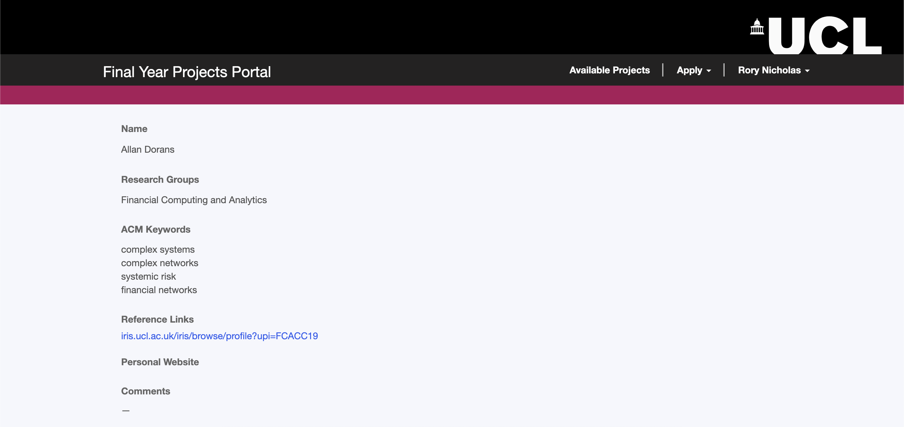
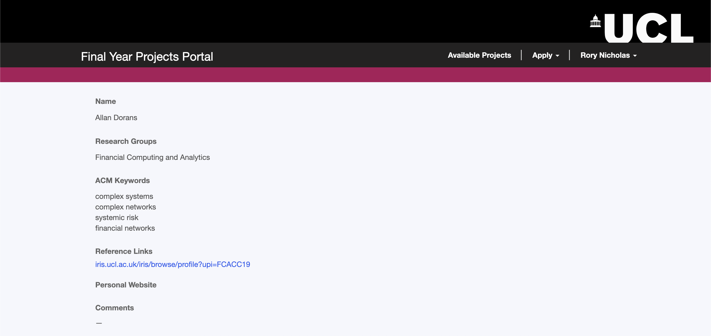


Whilst they are now located along the top of the page, tabs to allow for easy and fast navigation between different pages of the portal remain. We tried to preserve our feedback from potential users by grouping related pieces of data closely in one space. For instance, on a single dedicated page a student may pan through a clear list of potential Supervisors. Clicking on a particular supervisor will take the user to a more detailed page, which can be seen in the second picture.
Pictures 3&4 - View Application Page
Once they have filled out a form, a student may view all the data inputted into the form all in one place. Additionally, they may edit these fields and click 'submit' at the bottom of the page. This means that all the information a student has submitted can be viewed easily in one place. Again, this page is always easily reached through tabs along the top of the page.
In addition to acting on past feedback from sketches and prototypes, we made some changes to the general aesthetic and structure of the page. For example, in the prototypes the tabs were found along the left-hand side of the page; in the final design, they sit along the top. This way not entirely intentional, but simply a product of the way Microsoft Powerapps, our chosen development platform, works easily. We did not deem this to be a UI violation, and so we were happy to make this change. A second example of a change in our final design is the aesthetic. In our sketches and prototypes, we tried to use a colour scheme and layout to make the design resemble a traditional microsoft application. However, we instead changed the colour scheme and layout slightly such that it now resembles a UCL service more closely. We did this because our expected users were specified to be UCL students for the time being, and so we wanted to make the project as familiar to our audience as possible.
| [1] |
Nielsen Norman Group, "10 Usability Heuristics for User Interface Design" [Online]
Available: https://www.nngroup.com/articles/ten-usability-heuristics/ [Accessed: Mar 29. 2022] |